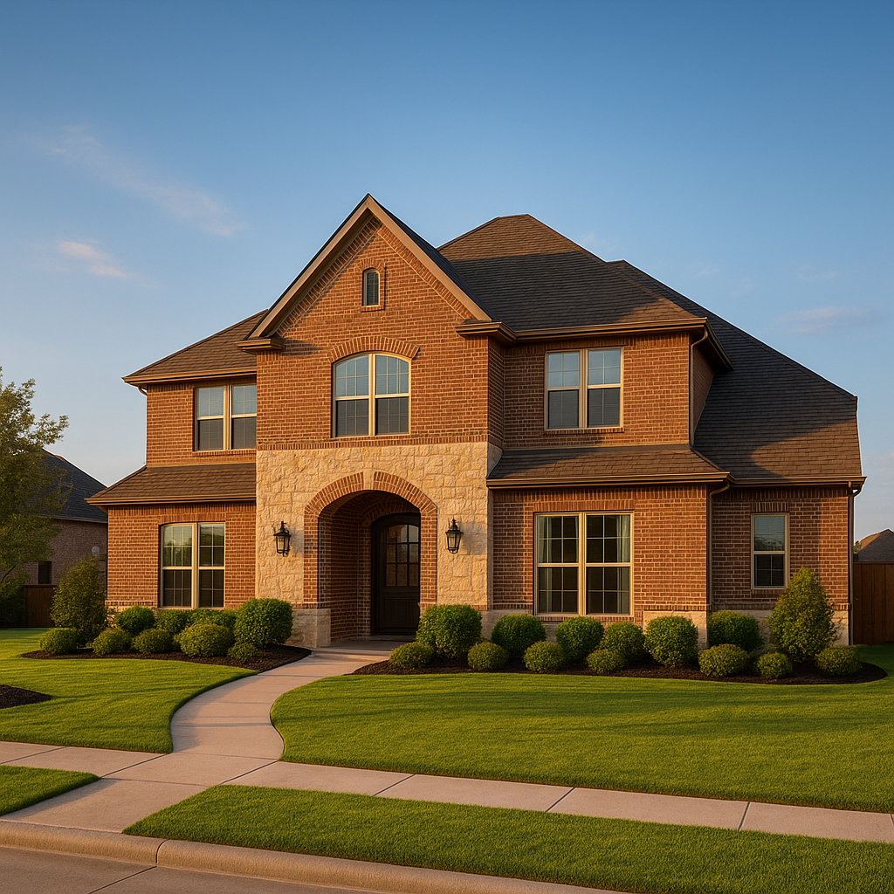

Most DFW buyers don't have 20% to put down. On a median Frisco or Plano home of roughly $480,000 to $550,000, 20% is more than $95,000 in cash. Put less down on a conventional loan and you pay private mortgage insurance (PMI). A piggyback loan, usually set up as an 80-10-10, is the alternative: a first mortgage for 80% of the price, a second mortgage for 10%, and 10% down from you, with no PMI on either loan.
I'm Bond Peter Njoku, a mortgage loan officer in Garland (NMLS #2670329). In 2026 there's a second reason my higher-priced Collin, Denton, and Tarrant County clients ask about piggybacks: keeping the first mortgage under the $832,750 conforming loan limit so they don't need a jumbo loan. Here's when it works and when plain PMI is the better deal.
How does an 80-10-10 piggyback loan work?
- 80%: first mortgage. A regular conventional loan. Because it's at 80% loan-to-value, it carries no PMI.
- 10%: second mortgage. Closed at the same time as the first. It can be a fixed-rate second (usually amortized over 15 to 30 years) or a home equity line of credit (HELOC) with a variable rate.
- 10%: your down payment. From savings, a gift, or proceeds from selling your current home.
Variations include 80-15-5 (5% down, where available) and 75-15-10, which is common for condos because condo pricing is better at 75%. The lender underwrites both loans together, so your debt-to-income ratio includes both payments.
A Texas note I get asked about: a second mortgage used to buy your home is a purchase-money lien. It isn't a Texas Section 50(a)(6) home equity loan, so the 80% cash-out cap and 12-day waiting rules don't apply to it. Those rules only kick in if you later borrow against equity.
Is a piggyback loan cheaper than paying PMI?
Here's a $500,000 home in Frisco at October 2026 pricing, with a 30-year fixed first mortgage at about 7.4%, a fixed second mortgage at about 8.75%, Collin County property tax around 1.5%, and insurance around $250 a month:
| Monthly cost | 80-10-10 piggyback | 10% down + PMI | 20% down |
|---|---|---|---|
| Cash down payment | $50,000 | $50,000 | $100,000 |
| First mortgage | $400,000 → $2,770 | $450,000 → $3,116 | $400,000 → $2,770 |
| Second mortgage | $50,000 → $393 | n/a | n/a |
| PMI (~0.55%/yr, good credit) | $0 | $206 | $0 |
| Property tax + insurance | $875 | $875 | $875 |
| Total monthly payment | $4,038 | $4,197 | $3,645 |
In this example the piggyback saves about $159 a month over 10% down with PMI, with the same cash out of pocket. If the second is a HELOC with interest-only payments at 8.75%, the second-lien payment starts around $365, but the rate can float up or down.
The comparison changes with credit score. With a 760+ score, PMI at 90% LTV can be as low as about 0.30% a year, roughly $112 a month on a $450,000 loan. In that case the gap almost disappears, and PMI has one advantage: on a conventional loan it comes off automatically at 78% of the original value, and you can request removal at 80%. A second mortgage has to be paid off. I break PMI pricing down in conventional loan PMI costs explained.
How does a piggyback loan help avoid a jumbo loan in DFW?
The 2026 conforming loan limit for one-unit homes in every DFW county is $832,750 (FHFA's baseline for 2026). Any first mortgage above that is a jumbo loan, which usually means stricter credit, larger reserves, and often a bigger down payment.
Say you're buying a $1,040,000 home in Southlake with 10% down. A single loan would be $936,000, which is jumbo territory. With an 80-10-10:
- First mortgage: $832,000, which is under the $832,750 conforming limit, so conforming pricing and guidelines apply. About $5,761 a month at 7.4%.
- Second mortgage: $104,000, about $818 a month on a 30-year fixed at 8.75%, or about $758 interest-only on a HELOC.
- Down payment: $104,000.
Many jumbo lenders want 15% to 20% down plus 6 to 12 months of reserves. The piggyback lets a buyer with strong income but 10% down stay in conforming guidelines. Whether it's cheaper than a jumbo depends on that day's jumbo pricing, so I quote both. See my jumbo loan limits guide for more. Buyers in Southlake and Prosper run into this most often.
What do I need to qualify for an 80-10-10 loan in Texas?
| Requirement | Typical guideline |
|---|---|
| Credit score | 680 minimum for most second-lien lenders; 700–720+ for the best pricing |
| Debt-to-income | Usually 43% or lower, counting both mortgage payments |
| Combined loan-to-value (CLTV) | Usually up to 90%; some programs allow 95% |
| Down payment | Usually 10% (5% on some programs) |
| Reserves | Often 2–6 months of payments in the bank after closing |
| Property type | Primary residence most common; condos often 75-15-10 |
| Second-lien rate (Oct 2026) | Roughly 8.5%–9.5% fixed, or a variable HELOC rate |
Not every lender offers both pieces. The second mortgage often comes from a bank or credit union partner. Part of my job is lining up both loans so they close on the same day with the same title company.
What are the risks of a piggyback loan?
- Two loans, two payments. Two servicers and two statements. Missing one hurts your credit just as much.
- Variable-rate HELOC risk. If your second is a HELOC and rates climb, so does your payment. With the 10-year Treasury at 5.33% and Fed hike odds rising, I lean toward a fixed second right now.
- Refinancing is harder. To refinance the first later, the second-lien holder has to agree to subordinate, or you pay it off.
- No automatic drop-off. PMI eventually disappears. A second mortgage has to be paid down.
Who is an 80-10-10 piggyback loan best for?
Here's a composite of a Frisco buyer I worked with this fall. A couple bought a $480,000 home with $48,000 down. Their credit scores were in the low 700s, where PMI is pricier. Their plan was to pay off the second within two years using an annual bonus. I priced both structures:
- 80-10-10: $384,000 first at 7.375% ($2,652) + $48,000 second at 8.5% ($369) = $3,021
- 10% down + PMI: $432,000 at 7.4% ($2,991) + PMI of about $187 = $3,178
The piggyback saved them about $157 a month from day one. Once the bonus pays off the second, their payment drops to $2,652 plus escrow, with no PMI and no need to order an appraisal to remove it. For a buyer with a 780 score and no plan to pay down the second early, I'd usually recommend PMI instead.
Piggybacks work best for buyers who have 10% down, good-but-not-perfect credit, a clear plan to pay off the second, or a price point just above the conforming limit. If you're buying in Frisco, Plano, or anywhere in DFW, start with a pre-approval and I'll quote both options side by side. You can also compare payments on my mortgage calculators.
Frequently Asked Questions
What is an 80-10-10 piggyback loan?
I'm Bond Peter Njoku (NMLS #2670329), a DFW loan officer. An 80-10-10 piggyback loan splits your financing into a first mortgage for 80% of the price, a second mortgage for 10%, and a 10% down payment from you. Because the first mortgage is at 80% loan-to-value, there's no private mortgage insurance. Both loans close at the same time, and the lender counts both payments in your debt-to-income ratio. Call or text me at 469-545-7180 to see whether it beats PMI for your purchase.
Is a piggyback loan better than paying PMI in Texas?
I'm Bond Peter Njoku (NMLS #2670329), and it depends mostly on your credit score and how fast you'll pay off the second. On a $500,000 Frisco home at October 2026 rates, an 80-10-10 came out about $159 a month cheaper than 10% down with PMI for a borrower paying about 0.55% PMI. With a 760+ score, PMI can be cheap enough that it's the better choice, especially because it comes off automatically at 78% loan-to-value. Call or text me at 469-545-7180 and I'll price both.
Can a piggyback loan help me avoid a jumbo loan in DFW?
Yes. I'm Bond Peter Njoku (NMLS #2670329), and the 2026 conforming loan limit in every DFW county is $832,750 for a one-unit home. On a $1,040,000 Southlake home with 10% down, an 80-10-10 keeps the first mortgage at $832,000, inside conforming guidelines, with a $104,000 second mortgage on top. That can avoid the larger down payment and reserve requirements many jumbo lenders have. Call or text me at 469-545-7180 to compare it with a jumbo quote.
What credit score do I need for a piggyback loan?
I'm Bond Peter Njoku (NMLS #2670329). Most second-mortgage lenders want at least a 680 credit score, and the best second-lien pricing usually starts around 700 to 720. You'll also typically need a debt-to-income ratio of 43% or lower counting both payments, 10% down, and some reserves after closing. If you're below 680, FHA or a conventional loan with PMI is usually the better path. Call or text me at 469-545-7180 and I'll tell you which structure you qualify for.
Want me to price an 80-10-10 against PMI for your home?
I'm Bond Peter Njoku (NMLS #2670329). I'll quote both structures on the same day so you can see the real monthly difference for your Frisco, Plano, Southlake, or Prosper purchase. Call or text me at 469-545-7180, message me on WhatsApp, or start your pre-approval online.